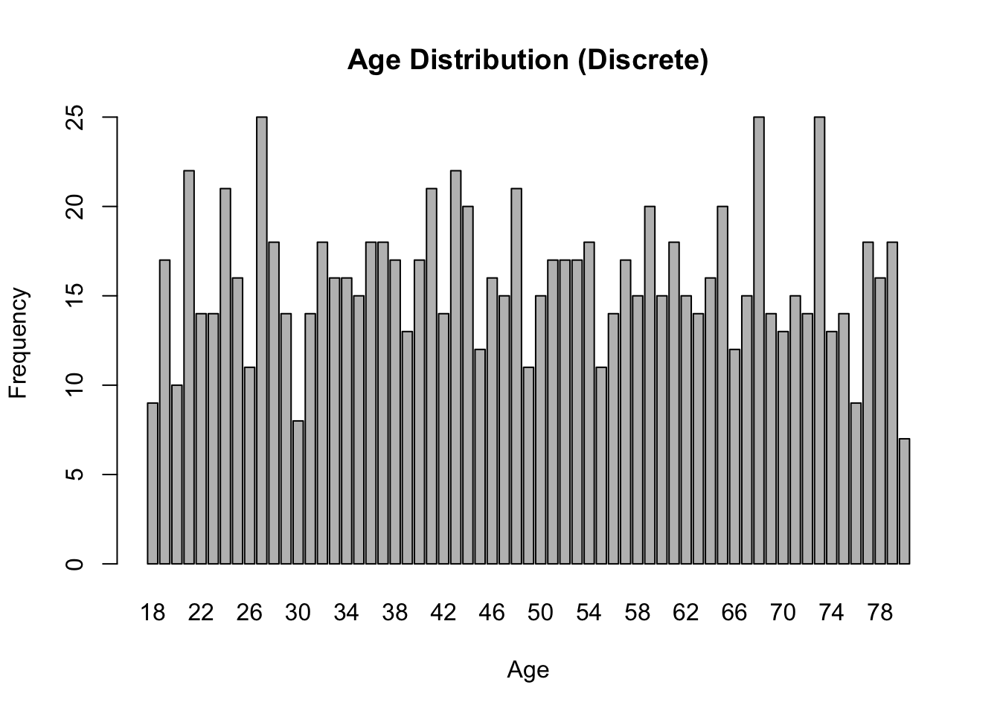
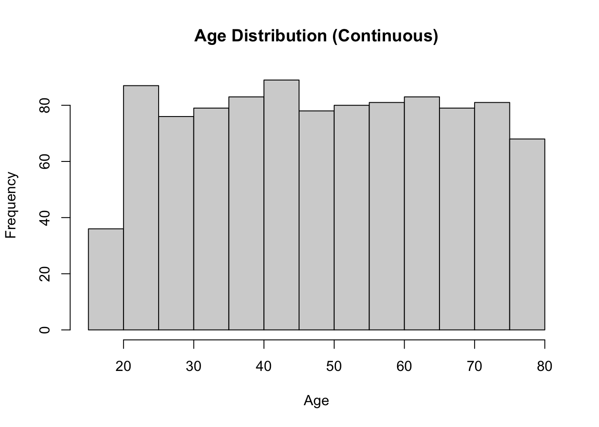
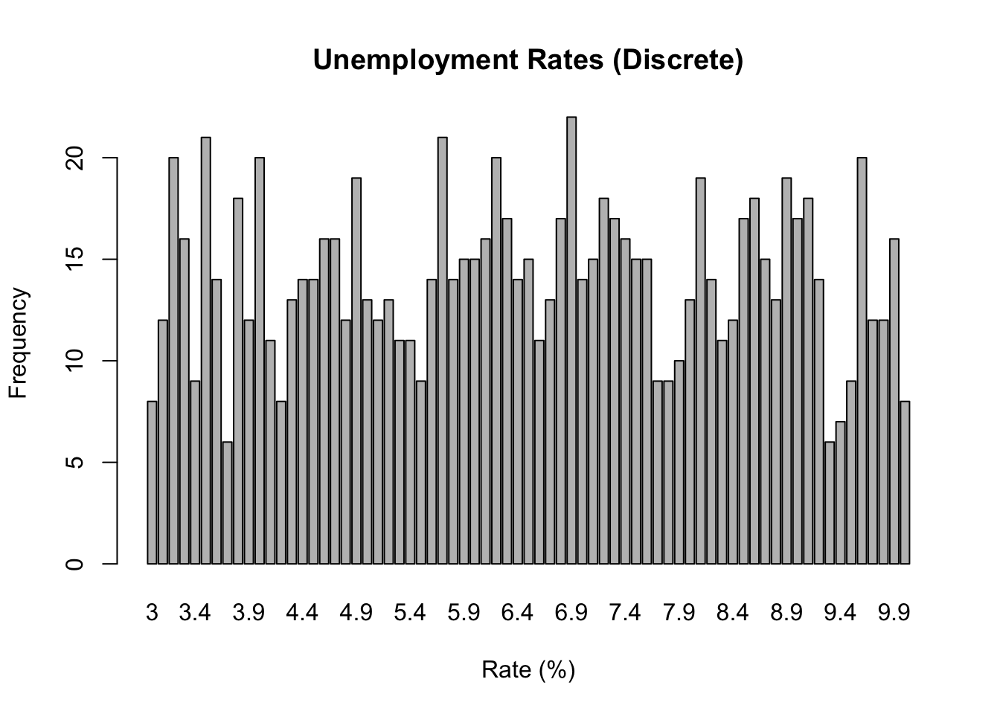
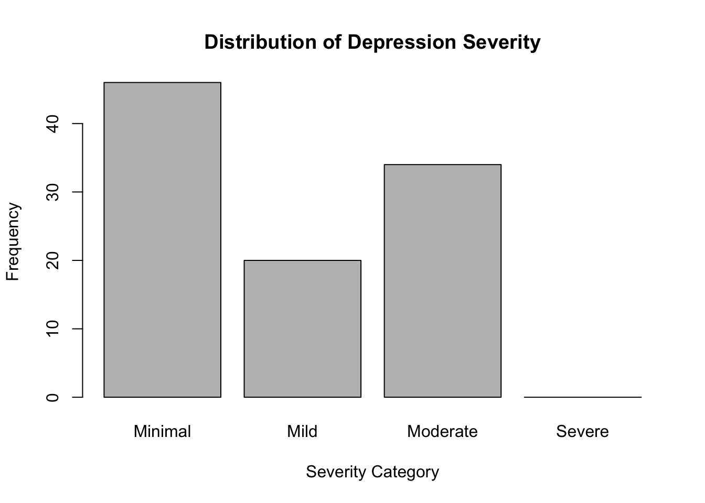

In social science research, understanding the nature of our data is crucial for selecting appropriate analysis methods and drawing valid conclusions. This chapter explores fundamental concepts of data types, starting from basic mathematical set theory and progressing to practical applications in social science research.
3.1 Foundations in Number Sets
Before diving into data types, it’s essential to understand the basic number sets that form the foundation of our understanding of data.
3.1.1 Basic Number Sets
Natural Numbers (ℕ): The counting numbers {1, 2, 3, …}
Integers (ℤ): Includes natural numbers, their negatives, and zero {…, -2, -1, 0, 1, 2, …}
Rational Numbers (ℚ): Numbers that can be expressed as a fraction of two integers
Real Numbers (ℝ): All numbers on the number line, including rationals and irrationals
3.1.2 Properties of Sets
Countable Sets: Sets whose elements can be put in a one-to-one correspondence with the natural numbers. For example, the set of integers is countable.
Uncountable Sets: Sets that are not countable. The set of real numbers is uncountable.
Discrete Sets: Sets where each element is separated from other elements by a finite gap. The integers form a discrete set.
Dense Sets: Sets where between any two elements, there is always another element of the set. The rational numbers and real numbers are dense sets.
Note
Understanding these set properties is crucial for grasping the nature of different data types in social sciences.
3.2 Discrete vs. Continuous Data
Now that we have a foundation in number sets, we can better understand the distinction between discrete and continuous data in social science research.
In data science and statistics, we often categorize variables as either discrete or continuous. However, the distinction is not always clear-cut, and some variables exhibit characteristics of both types. This document explores the concepts of discrete and continuous data, their differences, and the interesting case of variables that can be treated as both.
3.2.1 Discrete Data
Discrete data can only take on specific, countable values. These values are often (but not always) integers.
3.2.1.1 Characteristics of Discrete Data:
Countable
Often represented by integers
Can be finite or infinite
No values between two adjacent data points
3.2.1.2 Examples:
Number of students in a class
Number of cars sold by a dealership
Shoe sizes
3.2.2 Continuous Data
Continuous data can take on any value within a given range, including fractional and decimal values.
3.2.2.1 Characteristics of Continuous Data:
Uncountable
Can be measured to any level of precision
Represented by real numbers
There are always values between any two data points
3.2.2.2 Examples:
Height
Weight
Temperature
3.2.3 The Discrete-Continuous Spectrum
In practice, some variables that are mathematically discrete are often treated as if they are continuous. This dual nature provides flexibility in how these variables can be analyzed and interpreted.
3.2.3.1 Reasons for Treating Discrete Data as Continuous:
Dense Granularity
When a discrete variable has a large number of possible values within a range, it can approximate continuity.
Example: Income measured in individual dollars. While technically discrete (you can’t earn a fraction of a cent), the large number of possible values makes it behave similarly to a continuous variable.
Analytical Convenience
Continuous methods often yield reasonable and useful results even for dense discrete variables.
It’s often easier to use existing statistical tools if continuity is assumed, as this allows the use of calculus-based methods.
Approximation of Underlying Phenomena
In some cases, a discrete measurement might be an approximation of an underlying continuous process.
Example: While we measure time in discrete units (seconds, minutes, hours), time itself is continuous.
3.2.3.2 Examples of Variables with Dual Discrete-Continuous Nature:
Age
Discrete: Typically measured in whole years
Continuous: Can be considered as a continuous variable in many analyses, especially when dealing with large populations
Price
Discrete: Prices are often rounded to the nearest cent
Continuous: In economic models, prices are often treated as continuous variables
Test Scores
Discrete: Often given as whole numbers
Continuous: In statistical analyses, test scores might be treated as continuous, especially when the range of possible scores is large
3.2.4 Implications for Data Analysis
The ability to treat some variables as either discrete or continuous has important implications for data analysis:
Flexibility in Modeling: It allows for the use of a wider range of statistical techniques.
Simplified Calculations: Treating dense discrete data as continuous can simplify calculations and make certain analyses more tractable.
Improved Interpretability: In some cases, treating discrete data as continuous can lead to more intuitive or useful interpretations of results.
Potential for Error: It’s important to be aware of when this approximation is appropriate and when it might lead to misleading results.
3.2.5 Conclusion
Understanding the nature of variables as discrete or continuous is crucial in data science and statistics. However, it’s equally important to recognize that this distinction is not always rigid. The ability to treat some variables as either discrete or continuous, depending on the context and analytical needs, provides a powerful tool in the data scientist’s toolkit. As with all analytical decisions, the choice to treat a variable as discrete or continuous should be made thoughtfully, with consideration for the nature of the data, the goals of the analysis, and the potential implications of the choice.
3.2.6 R Code Example
Here’s a simple R code example to illustrate how we might analyze a variable (age) as both discrete and continuous:
# Generate some sample age dataset.seed(123)ages <-round(runif(1000, min =18, max =80))# Treat age as discreteage_table <-table(ages)barplot(age_table, main ="Age Distribution (Discrete)", xlab ="Age", ylab ="Frequency")

# Treat age as continuoushist(ages, main ="Age Distribution (Continuous)", xlab ="Age", ylab ="Frequency")

# Compare mean and mediancat("Mean age:", mean(ages), "\n")
Mean age: 48.848
cat("Median age:", median(ages), "\n")
Median age: 48
# Linear regression (treating age as continuous)income <-20000+500* ages +rnorm(1000, 0, 5000)model <-lm(income ~ ages)summary(model)
Call:
lm(formula = income ~ ages)
Residuals:
Min 1Q Median 3Q Max
-14214.7 -3504.0 66.3 3280.8 17032.3
Coefficients:
Estimate Std. Error t value Pr(>|t|)
(Intercept) 20286.728 462.218 43.89 <2e-16 ***
ages 495.352 8.889 55.72 <2e-16 ***
---
Signif. codes: 0 '***' 0.001 '**' 0.01 '*' 0.05 '.' 0.1 ' ' 1
Residual standard error: 5009 on 998 degrees of freedom
Multiple R-squared: 0.7568, Adjusted R-squared: 0.7565
F-statistic: 3105 on 1 and 998 DF, p-value: < 2.2e-16
# Plot regression lineplot(ages, income, main ="Income vs. Age", xlab ="Age", ylab ="Income")abline(model, col ="red")

This example demonstrates how we can analyze age data both discretely (using a bar plot) and continuously (using a histogram and linear regression). The choice between these approaches would depend on the specific research question and the level of precision required in the analysis.
3.3 Introduction to Stevens’ Data Typology
S. S. Stevens, an American psychologist, introduced a classification system for scales of measurement in his 1946 paper “On the Theory of Scales of Measurement.” This system, known as Stevens’ data typology or levels of measurement, has become fundamental in understanding how different types of data should be analyzed and interpreted.
Stevens proposed four levels of measurement:
Nominal
Ordinal
Interval
Ratio
Each level has specific properties and allows for different types of statistical operations and analyses.
3.3.1 Nominal Scale
3.3.1.1 Definition
The nominal scale is the most basic level of measurement. It uses labels or categories to classify data without any quantitative value or order.
3.3.1.2 Properties
Categories are mutually exclusive
No inherent order among categories
No meaningful arithmetic operations can be performed
3.3.1.3 Examples
Gender (Male, Female, Non-binary)
Blood types (A, B, AB, O)
Eye color (Blue, Brown, Green, Hazel)
3.3.1.4 Permissible Statistics
Mode
Frequency distributions
Chi-square test
3.3.1.5 R Example
# Creating a nominal variableeye_colors <-factor(c("Blue", "Brown", "Green", "Brown", "Blue", "Hazel"))# Frequency distributiontable(eye_colors)
eye_colors
Blue Brown Green Hazel
2 2 1 1
# Modenames(which.max(table(eye_colors)))
[1] "Blue"
3.3.2 Ordinal Scale
3.3.2.1 Definition
The ordinal scale categorizes data into ordered categories, but the intervals between categories are not necessarily equal or meaningful.
3.3.2.2 Properties
Categories have a defined order
Differences between categories are not quantifiable
Arithmetic operations on the numbers are not meaningful
The interval scale has ordered categories with equal intervals between adjacent categories. However, it lacks a true zero point.
3.3.3.2 Properties
Equal intervals between adjacent categories
No true zero point (zero is arbitrary)
Ratios between values are not meaningful
3.3.3.3 Examples
Temperature in Celsius or Fahrenheit
Calendar years
IQ scores (traditionally treated as interval, though this is debated)
3.3.3.4 Permissible Statistics
Mean
Standard deviation
Pearson’s correlation
T-tests and ANOVA
3.3.3.5 R Example
# Creating an interval variable (temperature in Celsius)temperatures <-c(22, 25, 19, 28, 23, 20)# Mean and standard deviationmean(temperatures)
[1] 22.83333
sd(temperatures)
[1] 3.311596
# Pearson's correlation with another variablehumidity <-c(60, 65, 55, 70, 62, 58)cor(temperatures, humidity)
[1] 0.9958407
3.3.4 Ratio Scale
3.3.4.1 Definition
The ratio scale is the highest level of measurement. It has all the properties of the interval scale plus a true zero point, making ratios between values meaningful.
3.3.4.2 Properties
All properties of interval scales
True zero point
Ratios between values are meaningful
3.3.4.3 Examples
Height
Weight
Age
Income
3.3.4.4 Permissible Statistics
All statistical operations
Geometric mean
Coefficient of variation
3.3.4.5 R Example
# Creating a ratio variable (age)ages <-c(25, 30, 22, 35, 28, 40)# Geometric meanexp(mean(log(ages)))
[1] 29.40774
# Coefficient of variationsd(ages) /mean(ages)
[1] 0.220101
3.3.5 Importance in Research and Analysis
Understanding Stevens’ data typology is crucial for several reasons:
Choosing appropriate statistical tests: The level of measurement determines which statistical analyses are appropriate for a given dataset.
Interpreting results: The meaning of statistical results depends on the level of measurement of the variables involved.
Designing measurement instruments: When creating surveys or other measurement tools, researchers must consider the level of measurement they want to achieve.
Data transformation: Sometimes, data can be transformed from one level to another, but this must be done carefully to avoid misinterpretation.
3.3.6 Controversies and Limitations
While Stevens’ typology is widely used, it has faced some criticisms:
Rigidity: Some argue that the typology is too rigid and that many real-world measurements fall between these categories.
Treatment of ordinal data: There’s ongoing debate about when it’s appropriate to treat ordinal data as interval for certain analyses.
Psychological scaling: Some psychological constructs (like intelligence) are difficult to categorize definitively within this system.
3.3.7 Conclusion
Stevens’ data typology provides a fundamental framework for understanding different types of data and their properties. By recognizing the level of measurement of their variables, researchers can make informed decisions about data collection, analysis, and interpretation. However, it’s important to remember that while this typology is a useful guide, real-world data often requires nuanced consideration and may not always fit neatly into these categories.
pH as an Interval Scale
pH is considered an interval scale because:
It has ordered categories: Lower pH values indicate higher acidity, while higher values indicate higher alkalinity.
The intervals between adjacent pH values are equal in terms of hydrogen ion concentration:
Each whole number change in pH represents a tenfold change in hydrogen ion concentration.
For example, the difference in acidity between pH 4 and pH 5 is the same as the difference between pH 7 and pH 8.
It lacks a true zero point:
pH 0 does not represent a complete absence of hydrogen ions.
Negative pH values and values above 14 are possible in extreme conditions.
Ratios are not meaningful:
A pH of 4 is not “twice as acidic” as a pH of 2.
The ratio of hydrogen ion concentrations, not pH values, indicates relative acidity.
These characteristics align with the definition of an interval scale, where the differences between values are meaningful and consistent, but ratios are not interpretable.
3.4 Likert Scales and Ordinal Variables in Psychology
Likert scales are widely used in psychology and social sciences to measure attitudes, opinions, and perceptions. Named after psychologist Rensis Likert, these scales typically consist of a series of statements or questions that respondents rate on a scale, often from “Strongly Disagree” to “Strongly Agree.”
3.4.1 Why Likert Scales are Ordinal Variables
Likert scales are considered ordinal variables for several reasons:
Order without equal intervals: While the responses have a clear order (e.g., “Strongly Disagree” < “Disagree” < “Neutral” < “Agree” < “Strongly Agree”), the intervals between these categories are not necessarily equal.
Subjective interpretation: The difference between “Strongly Disagree” and “Disagree” may not be the same as the difference between “Agree” and “Strongly Agree” for all respondents.
Lack of true zero point: Likert scales typically don’t have a true zero point, which is a characteristic of interval or ratio scales.
Let’s illustrate this with an example in R:
# Create a factor variable to represent Likert scale responseslikert_responses <-factor(c("Strongly Disagree", "Disagree", "Neutral", "Agree", "Strongly Agree"),ordered =TRUE,levels =c("Strongly Disagree", "Disagree", "Neutral", "Agree", "Strongly Agree"))# Print the levels to show the orderingprint(levels(likert_responses))
# Attempt to calculate mean (which is inappropriate for ordinal data)numeric_responses <-as.numeric(likert_responses)print(mean(numeric_responses))
[1] 3
As we can see, while we can order the responses, treating them as numeric and calculating the mean doesn’t provide meaningful information due to the ordinal nature of the data.
3.5 IQ and Other Psychological Variables as Ordinal Measures
Many psychological measures, including IQ, are often treated as interval scales but are, in fact, ordinal. Here’s why:
IQ Scores:
While IQ scores are presented as numbers, the difference between an IQ of 100 and 110 may not represent the same cognitive difference as between 130 and 140.
The scale is normalized and adjusted over time, making it difficult to claim true interval properties.
depression_categories
Minimal Mild Moderate Severe
46 20 34 0
# Plot distributionbarplot(table(depression_categories), main ="Distribution of Depression Severity",xlab ="Severity Category",ylab ="Frequency")

While we can order these categories, we can’t assume that the difference between “Minimal” and “Mild” is the same as between “Moderate” and “Severe” in terms of the underlying construct of depression.
3.5.1 Implications for Analysis
Recognizing these measures as ordinal has important implications for data analysis:
Appropriate statistical tests: Use non-parametric tests (e.g., Mann-Whitney U, Kruskal-Wallis) instead of parametric ones.
Correlation analysis: Use Spearman’s rank correlation instead of Pearson’s correlation.
Central tendency: Report median and mode rather than mean.
Data visualization: Use methods appropriate for ordinal data, such as bar plots or stacked bar charts.
3.5.2 Conclusion
While Likert scales and many psychological measures are often treated as interval data for practical reasons, it’s crucial to remember their ordinal nature. This understanding should inform our choice of statistical analyses and interpretations of results in psychological research.
Exercise: Identifying Measurement Scales
For each of the following variables, determine the most appropriate scale of measurement (Nominal, Ordinal, Interval, or Ratio). Provide your answers and rationale in your assignment submission.